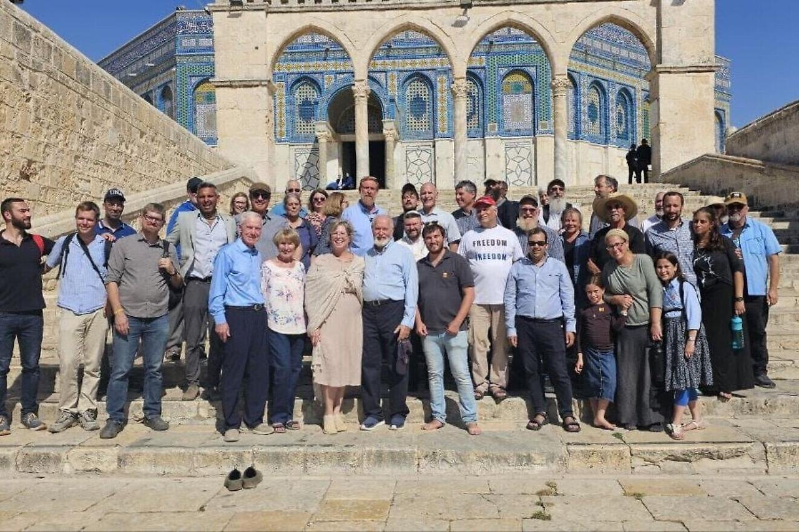

Support
Partner with John’s ministry in Israel.
John serves in Israel as minister on location for The Watchman International. Your gifts sustain his work in teaching, Jewish–Christian relations, combating antisemitism, and humanitarian aid.

What your gift supports
Teaching
Making the Bible and its history accessible, in Israel and abroad.
Jewish–Christian relations
Building understanding and friendship between Christians and the Jewish people.
Combating antisemitism
Answering old myths in new forms, especially within the Church.
Humanitarian aid
Practical help for people in need in Israel.
Ways to give
Online
Give once or monthly by PayPal, Venmo, or card through The Watchman International.
Give onlineBy check
Prefer to mail a check? Please designate checks to “John & Sofia.”
The Watchman InternationalPO Box 45
Northwood, IA 50459
USA
The Watchman International, Inc. is a US-registered 501(c)(3) ministry, established 1992, which provides John and his family with leadership, accountability, and spiritual covering. All gifts are tax-deductible for US donors.